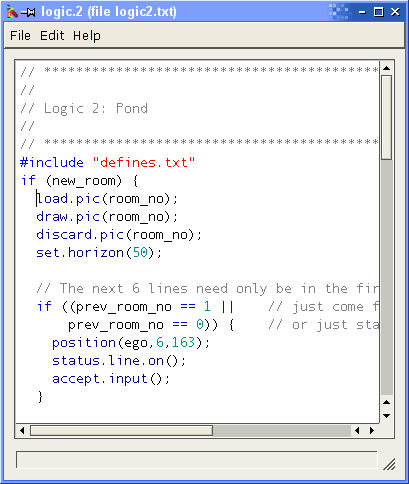

It is designed to be easier to use than its DOS counterparts in that you can save your source code, compile your logic, add it to the game and run the game all with the press of one key, eliminating the several steps and switching between applications previously required. It will also indicate any errors in the source code it encounters when compiling, so you can find them easily.
Previously, the syntax used for programming AGI logics has varied very slightly between compilers and has not been properly documented. Peter Kelly and other AGI developers have decided on a proper syntax which will be supported by all logic compilers/decompilers. This syntax is documented in AGI specs. AGI Studio fully supports the syntax.

When the cursor is located in the middle of a highlighted AGI command, you can hit F1 (or choose the option from the help menu) to read an on-line help page that describes it.
When you compile the logic in AGI Studio, it is automatically added to the game. The source code is saved in a text file in the source directory of whatever game you are editing. You can specify in the "Settings" menu the location of the source directory - it can be a subdirectory of the game directory (the default: "src") but it can be also in a completely different place. The name of the file is logic.X where X is the number of the logic.
----------------------------------------------
This is basically all you need to know about AGI Studio's logic editor. You will need to know how to program in the language though. Read the logic help.